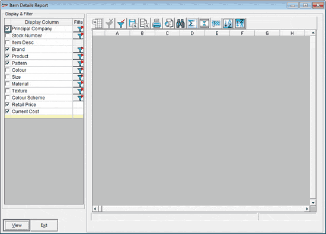
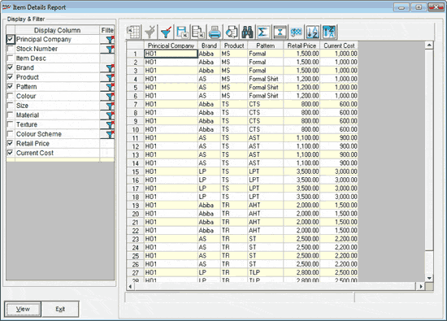

This report shows details of items imported from the selected principals.
How to reach: Catalogue > Listings > Items
The Item Details Report window is as shown.

Display & Filter: Select the required columns to include the columns in the report. Click against a classification to specify the required filter. All codes and descriptions of the corresponding classification are listed in the Filters window. Select the required values and click Ok. Once, the filter is set the Filter button changes to .
View: Click to display the relevant data in the grid.
A sample report is as shown.

You can process the report as per your requirements using the reports toolbar. Click here for more details.